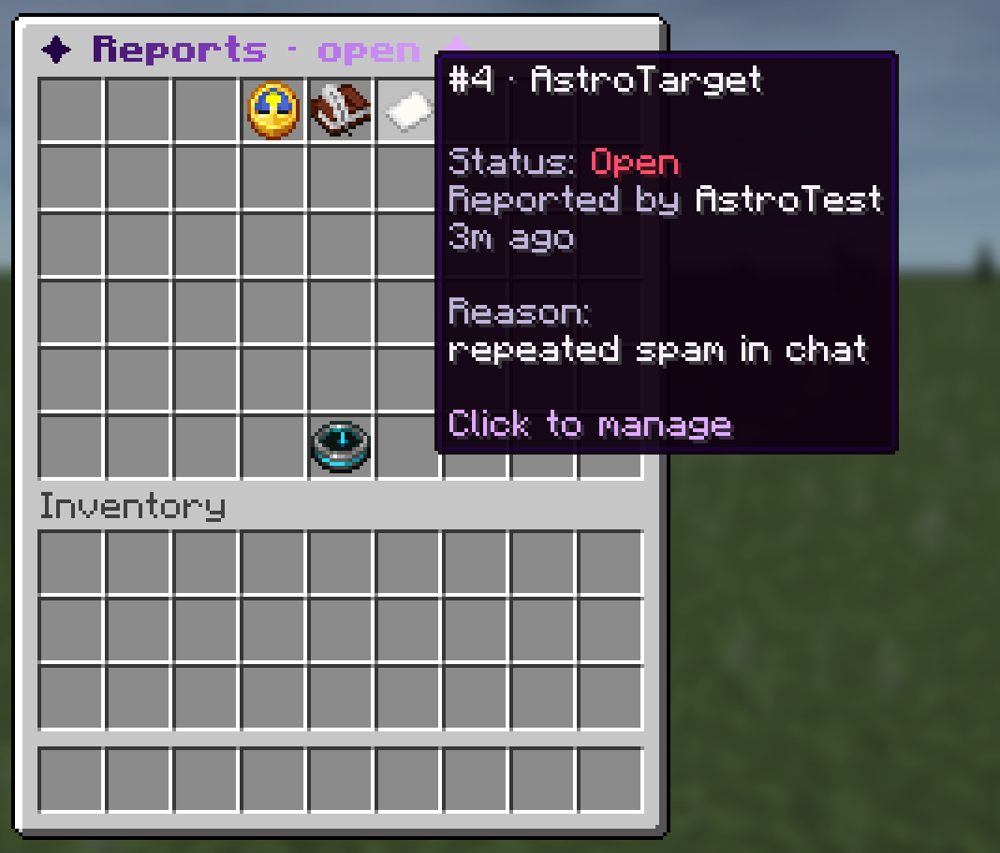

Reports let a player tell your staff about a problem with /report <player> <reason>. Each report becomes a numbered ticket that staff claim, answer and close, so nothing is lost and everyone knows who is handling what. The player can follow their ticket and reply to staff.
Support requests catch questions like "any admin online?" in chat and turn them into a private conversation with the right staff member.

Turn reports on
Reports ship off. In moderation.yml:
Reports:
Enabled: true
Cooldown: 60Run /cht reload. Cooldown is the seconds a player waits between two reports (chatalyst.report.bypass skips it).
For players
| Command | What it does |
|---|---|
/report <player> <reason> |
Sends a report to the staff. |
/ticket |
Shows your open tickets. |
/ticket <id> <message> |
Replies to staff on your ticket. |
For staff
/reports opens the inbox. From there, or with subcommands, staff can claim, reply, mark as pending, resolve, reject, reopen and prioritize a ticket. The whole conversation opens as a book.
| State | Meaning |
|---|---|
| Open | Waiting for staff. |
| Claimed | A staff member is handling it. |
| Pending | Waiting for more information. |
| Resolved / rejected | Closed. Can be reopened later. |
| Permission | Gives |
|---|---|
chatalyst.report.receive |
Get an alert (with a soft sound) when a report arrives. |
chatalyst.report.manage |
List, claim and resolve reports with /reports. |
chatalyst.report.priority |
See and handle critical reports. Give it to high ranks only. |
/reports priority <id> moves a sensitive case (item loss, rank removal) to the critical section that only chatalyst.report.priority sees. Deleting tickets is controlled by Allow_Delete and Delete_High_Rank_Only in the same section.
Reports on Discord and on the map
- With the Discord bot, reports can go to a staff channel, where staff can type
!reports,!claim <id>,!reply <id>and more. Players who linked their account get updates by private message. - With dynmap, open reports can show as markers on the map (
Dynmap.Reports.Enabledinintegrations.yml).
Support requests
When a player asks something like "any admin?" or "I need a helper" in the main chat, Chatalyst keeps it out of public chat and alerts the staff, starting with the lowest rank and moving up if nobody answers. The staff member who accepts it (/support answer <id>) gets a private chat with the player until /support close.
It is off by default. In network.yml:
Staff_Mentions:
Enabled: false
Require_At: false
Groups: [admin, administrador, helper, ayudante, mod, moderador, owner, soporte, staff, equipo]Set Enabled: true and reload. It works on a single server and across a whole proxy network.